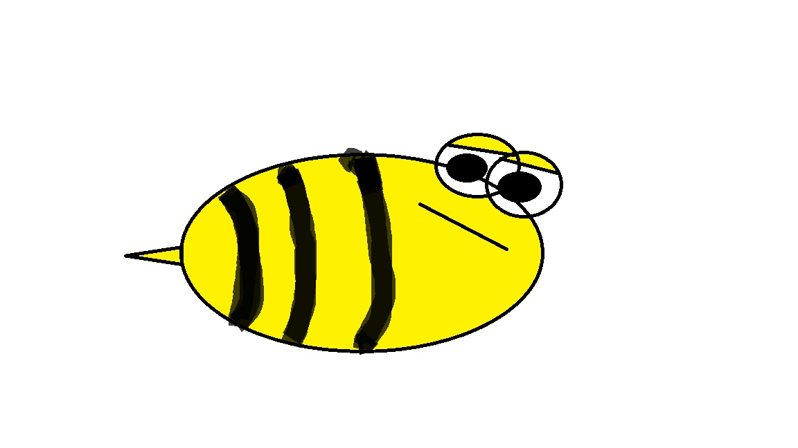

Мене звати Кузьмін Михайло Олександрович. Я студент Полтавської політехніки. Навчаюся за спеціальністю Комп'ютерні науки. Вивчаю різні мови програмування, такі як Python, Java, та C#. Мені подобається дізнаватися про нові технології, особливо у сфері штучного інтелекту.
Окрім навчання, я також захоплююсь спортом та програмуванням. Мої хобі допомагають мені розвиватися як компетентний спеціаліст і цікава особистість.
Моє хобі
Я захоплююсь програмуванням і пишу код на різних мовах. Ось приклад простої програми на Python:
def hello_world():
print("Привіт, світ!")
hello_world()

Студент групи 302-ТН Кузьмін М.О.